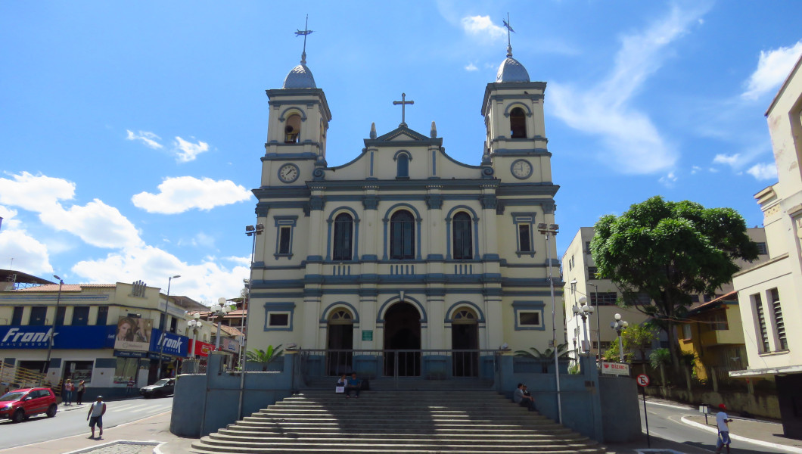

IGREJA NOSSA SENHORA DO PILAR

Igreja de Nossa Senhora do Pilar, padroeira de Nova Lima. Igreja em estilo eclético construído no século XVIII e reformado em 1906. Importante exemplar de arquitetura. Principal templo católico da cidade. Do ponto de vista artístico e cultural, ressalta-se a grande importância do conjunto do altar, dos laterais, o coro e o batistério, todos da autoria do mestre Aleijadinho e enaltecidos pelo especialista, escritor e crítico de arte Germain Bazin. O conjunto foi doado à Igreja por George Chalmers, trazido de sua Fazenda da Jaguara. Das grandes obras de Aleijadinho, é a que se encontra mais próxima da capital, Belo Horizonte.